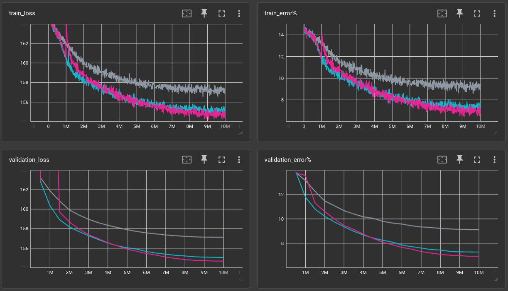
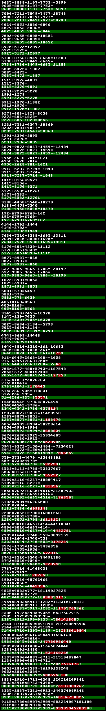

Math with tiny language models ←
experiments/textmask/math/convtext-math.yml @ 382c4113
python exp.py experiments/textmask/math/convtext-math.yml results -ec matrix_id matrix_slug compression-ratio -ic "train_error%" "validation_error%" -sc "validation_error%-"
| bs | opt | lr | len | lnum | nops | l | ch | ks | dil | act | validation loss (10,000,000 steps) | train_error% | validation_error% | model params | train time (minutes) | throughput |
|---|---|---|---|---|---|---|---|---|---|---|---|---|---|---|---|---|
| 64 | AdamW | 0.0005 | 40 | 9999 | 1,3 | 6 | 64 | 13 | 1,2,3,4,5,1 | gelu | 157.126 | 8.7793 | 9.12669 | 336,256 | 24 | 6,944/s |
| 64 | AdamW | 0.0005 | 40 | 9999 | 1,3 | 12 | 64 | 13 | 1,2,3,4,5,1,1,2,3,4,5,1 | gelu | 155.068 | 7.36328 | 7.291 | 656,128 | 37.11 | 4,491/s |
| 64 | AdamW | 0.0005 | 40 | 9999 | 1,3 | 18 | 64 | 13 | 1,2,3,4,5,1,1,2,3,4,5,1,1,2,3,4,5,1 | gelu | 154.686 | 6.86035 | 6.94218 | 976,000 | 48.52 | 3,434/s |

